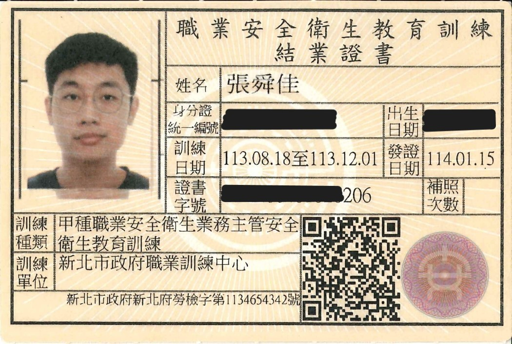

關於我
您好，我叫 張舜佳，出生於台北市北投區。目前就讀於 龍華科技大學電機工程系碩士班，並於 永碁科技股份有限公司 擔任工程師，已累積 5 年以上中央監控相關的實務經驗。
我對電機領域充滿熱情，尤其在 中央監控、門禁系統、物聯網應用 等領域持續鑽研，並參與多場研討會與競賽，累積寶貴學術與實作經驗。期許自己整合 AI、IoT 與大樓能源管理技術，為智慧建築與節能減碳做出貢獻。
SWOT 分析
優勢：抗壓性強、責任感高、熟悉中央監控與 IoT 整合
劣勢：個性稍內向、英語能力有待提升
機會：少子化導致人才缺乏、物聯網需求迅速成長
威脅：業界競爭激烈、科技環境快速變動
我深信「萬物皆可控」不僅僅是口號，而是實踐智慧生活的關鍵。透過不斷精進與交流，我們能使生活更安全、更高效且更具創新性。
經歷
永碁科技股份有限公司 工程師 (2018 ~ 至今)
- 負責大樓中央監控系統設計與整合
- 門禁系統、停車管理系統施工與維運
- 現場工程規劃（配管、設備選型、AutoCAD 繪圖）
- 與團隊合作完成多項大型專案，提升系統穩定性
龍華科技大學 電機工程所 (2023 ~ 2025)
- 研究領域：IoT 智慧監控、機電整合、建築節能
- 籌備論文：結合 AI 與大數據分析以達成中央空調能源最佳化
- 多次參與學術研討會與實習專案，強化產學合作
龍華科技大學 電機工程學系 (2019 ~ 2023)
- 電機工程學系畢業
- 建立扎實的電機理論與實作基礎，並考取多項專業證照
- 透過專題競賽與實習累積豐富經驗
專業技能
中央監控系統 (SCADA)
- 規劃並設計整體監控架構
- 資料採集與即時監控整合
- 故障診斷及性能優化實務經驗
- IoT 裝置協同運作，提升遠端管理效率
門禁/攝影/停管系統
- 嚴謹的硬體設備選型與調試
- 現場安裝、測試及後續維護
- 多子系統整合，確保安全與穩定
- 提供即時影像監控與數據備份方案
工業電子、電氣配線
- 精準電路設計與系統規劃
- 嚴格遵循安全標準與施工規範
- 現場故障排查及維修實務
- 客製化配線解決方案
AI 圖像辨識
- 掌握 TensorFlow 與 PyTorch 框架
- 開發圖像分類與物件檢測應用
- 整合 AI 技術於智慧監控系統
- 優化影像處理流程，提高辨識準確率
數據分析與機器學習
- 精通線性回歸、決策樹與隨機森林
- 使用 Python 建構預測模型與資料視覺化
- 實作專案改善能源效率與資源配置
- 從大數據中提煉決策指標支援管理決策
智慧家庭
- 整合智能家電與 IoT 設備，打造智能化居家環境
- 自動化控制：照明、溫控、安防與影音系統一體化管理
- 遠程監控與管理，提升居家安全與節能效率
- 支援語音控制與智能助手整合，提升生活便利性
證照
乙級室內配線技術士
乙級通信技術(電信線路)技術士
丙級用電設備檢驗技術士
丙級工業電子技術士
丙級電腦硬體裝修技術士
營造業甲種勞工安全衛生業務主管
甲種勞工安全衛生業務主管
AutoCAD國際認證
三等業餘無線電人員執照
EMT-1 救護技術員
研討會 / 論文
我積極參與各項研討會與學術論壇，並發表研究成果或工作坊報告，以不斷吸收最新科技趨勢並驗證所學。下列列出近年參與的主要活動及詳細說明：
透過建立回歸模型，本次研討會探討了不同冰水溫差對中央空調系統能耗的影響，並以大量實驗數據驗證模型預測效果。參與者深入了解如何根據環境參數調整空調設定，以達到節能目的。
2024 年的民生電子國際研討會以「智慧能源管理與節能減碳」為主題，深入探討如何利用大數據與人工智慧技術優化中央空調系統運作。議程涵蓋專題演講、案例分享、互動討論及技術工作坊，旨在促進產業技術交流與節能改造。
結合先進機器學習演算法，本研討會探討如何利用決策樹與隨機森林技術，快速識別商辦建築中能源使用異常，並制定創新節能策略，從數據中提煉關鍵指標以實現節能降耗。
照片集
下方陳列部分研討會、競賽及證明照片，點擊可放大檢視。

iWCE2024 民生電子國際研討會
基於奇異值分解的影像壓縮技術及其應用效果分析

iWCE2024 民生電子國際研討會
Energy Consumption Forecasting in Commercial Buildings Using Transformer Model

ITAOI2024 離島資訊研討會
結合遞歸神經網絡與時間特徵於能耗預測的策略探討
iWCE2023 民生電子國際研討會
冰水溫差對中央空調系統性能影響之線性回歸分析
SICH2024 系統性創新研討會
創新節能策略應用決策樹與隨機森林於商辦耗能識別
聯絡方式
如需洽談任何合作專案、中央監控整合或 IoT 相關服務，歡迎透過以下方式聯繫我：
- 信箱：ss9008041234@gmail.com
- 電話：0911-966-014
- 目前所在地：台北市北投區